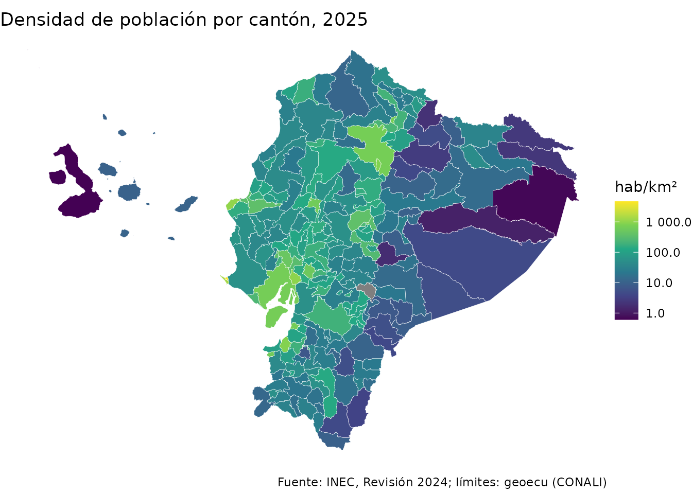
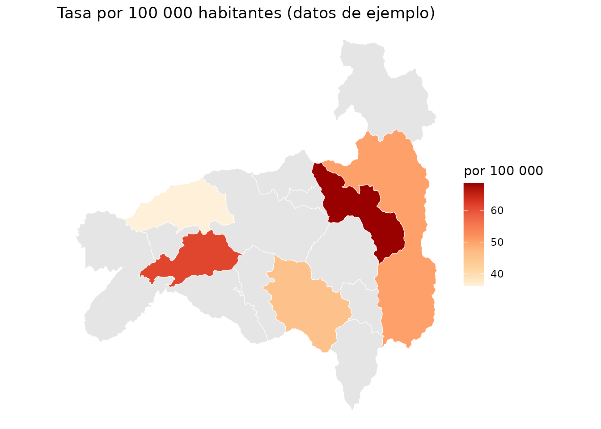
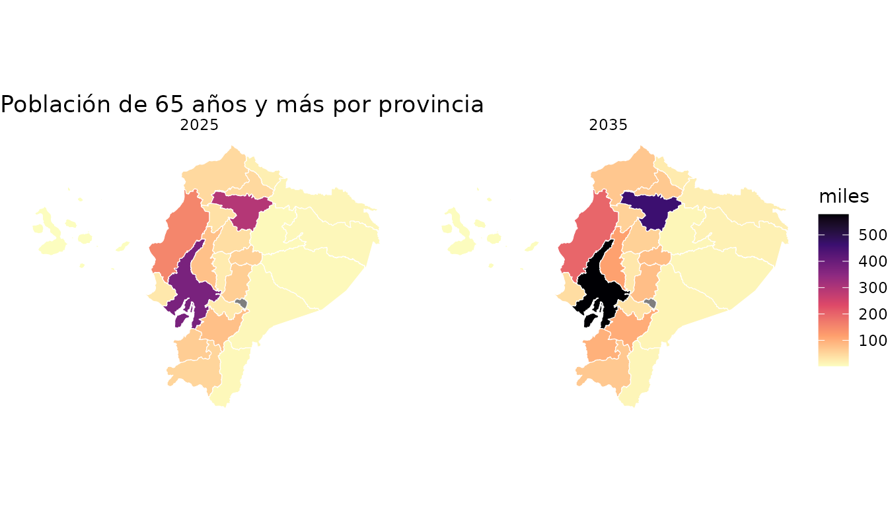

pobecu y geoecu usan
los códigos DPA. geoecu 0.4.1 aporta límites y
superficie area_km2, calculada sobre el elipsoide WGS84 a
partir de la geometría de resolución alta. pobecu integra esa superficie
con la población y calcula habitantes por km² con
pob_mapa().
Dos divisiones territoriales
La población de pobecu usa las unidades del Censo 2022: 221 cantones y 1042 parroquias (las proyecciones del INEC no tienen otras). geoecu, desde la versión 0.4.0, usa la Organización Territorial del Estado del CONALI (2026), que es más reciente: 223 cantones y 1048 parroquias, más 3 zonas en estudio. Las diferencias son pocas, pero importan en un mapa:
| CONALI 2026 (geoecu) | Censo 2022 (pobecu) |
|---|---|
Cantón Borbón (0809) y sus 12 parroquias |
Parte de Eloy Alfaro (0802) |
Cantón Sevilla Don Bosco (1413, cabecera
141350) |
Parroquia rural de Morona (140157) |
Bella Vista (200351) |
Bella Vista (200353) |
Sosote (131251) |
Dentro de Rocafuerte (131250) |
Shuar Pastaza (160167) |
Dentro de Simón Bolívar (160162) |
Juan Montalvo (170257) |
Dentro de Cayambe (170250) |
La Magdalena, La Primavera, Miss Ecuador (210456 a
210458) |
Dentro de Shushufindi (210450) |
Zonas en estudio (139090, 140190,
900651) |
Sin población propia |
pob_mapa() convierte la capa a las unidades del censo
con agrupar_unidades() antes de unirla, así que cada cifra
se dibuja sobre el territorio que le corresponde. Si dibujaras la
población de Eloy Alfaro solo sobre el polígono que hoy tiene ese cantón
(465 km² de los 4480 que tenía en el censo), su densidad saldría casi
diez veces más alta.
esmeraldas <- geoecu::read_cantones(provincia = "Esmeraldas")
nrow(esmeraldas) # cantones en geoecu
#> [1] 8
nrow(agrupar_unidades(esmeraldas)) # cantones del censo
#> [1] 7Densidad cantonal: habitantes por superficie
pob_mapa() agrupa las unidades CONALI que corresponden a
cada unidad del Censo 2022 y suma las áreas de sus polígonos. Así
numerador y denominador corresponden al mismo territorio. La fórmula es
poblacion / area_km2.
cant <- pob_mapa("canton", anio = 2025)
cant <- geoecu::reubicar_galapagos(cant)
sf::st_drop_geometry(cant)[, c("canton", "poblacion", "area_km2", "densidad")]
#> canton poblacion area_km2 densidad
#> 1 Cuenca 624053 3194.613 195.3454143
#> 2 Girón 12423 342.431 36.2788416
#> 3 Gualaceo 44426 345.894 128.4381920
#> 4 Nabón 14868 631.367 23.5489026
#> 5 Paute 27349 267.669 102.1747008
#> 6 Pucará 9750 638.841 15.2620136
#> 7 San Fernando 3726 143.124 26.0333697
#> 8 Santa Isabel 20785 826.950 25.1345305
#> 9 Sígsig 25756 676.689 38.0617980
#> 10 Oña 3482 289.751 12.0172148
#> 11 Chordeleg 12359 104.275 118.5231359
#> 12 El Pan 2755 139.198 19.7919510
#> 13 Sevilla De Oro 4565 315.030 14.4906834
#> 14 Guachapala 3656 40.476 90.3251309
#> 15 Camilo Ponce Enríquez 25005 214.214 116.7290653
#> 16 Guaranda 100355 1859.500 53.9688088
#> 17 Chillanes 20280 669.999 30.2687019
#> 18 Chimbo 15548 269.775 57.6332129
#> 19 Echeandía 15511 244.901 63.3357969
#> 20 San Miguel 28800 585.847 49.1595929
#> 21 Caluma 16509 175.516 94.0598008
#> 22 Las Naves 7348 150.202 48.9207867
#> 23 Azogues 77819 632.754 122.9846038
#> 24 Biblián 18828 182.073 103.4090722
#> 25 Cañar 52160 1855.039 28.1180072
#> 26 La Troncal 68127 367.466 185.3967442
#> 27 El Tambo 9643 63.074 152.8839141
#> 28 Déleg 6255 73.553 85.0407189
#> 29 Suscal 4628 53.292 86.8423028
#> 30 Tulcán 95087 1811.553 52.4892178
#> 31 Bolívar 16368 358.948 45.5999198
#> 32 Espejo 14593 566.508 25.7595656
#> 33 Mira 12859 583.233 22.0477922
#> 34 Montúfar 30165 379.711 79.4419967
#> 35 San Pedro De Huaca 7948 76.279 104.1964368
#> 36 Latacunga 230875 1494.010 154.5337715
#> 37 La Maná 57972 660.519 87.7673466
#> 38 Pangua 22719 719.390 31.5809227
#> 39 Pujilí 68269 1328.491 51.3883797
#> 40 Salcedo 70344 468.055 150.2900300
#> 41 Saquisilí 24780 156.286 158.5554688
#> 42 Sigchos 18423 1357.086 13.5754108
#> 43 Riobamba 272762 997.860 273.3469625
#> 44 Alausí 37948 1100.137 34.4938858
#> 45 Colta 29956 819.057 36.5737671
#> 46 Chambo 13811 166.012 83.1927812
#> 47 Chunchi 10750 272.525 39.4459224
#> 48 Guamote 35934 1192.883 30.1236584
#> 49 Guano 49528 464.820 106.5530743
#> 50 Pallatanga 12137 379.908 31.9472083
#> 51 Penipe 6909 370.680 18.6387180
#> 52 Cumandá 17620 159.418 110.5270421
#> 53 Machala 324062 372.498 869.9697716
#> 54 Arenillas 33996 787.735 43.1566453
#> 55 Atahualpa 6221 281.764 22.0787609
#> 56 Balsas 8179 68.785 118.9067384
#> 57 Chilla 2256 331.744 6.8004244
#> 58 El Guabo 63789 580.164 109.9499452
#> 59 Huaquillas 59997 98.717 607.7676591
#> 60 Marcabelí 7152 148.518 48.1557791
#> 61 Pasaje 87122 456.278 190.9406108
#> 62 Piñas 30236 614.688 49.1891822
#> 63 Portovelo 14002 284.172 49.2729755
#> 64 Santa Rosa 85112 896.363 94.9526029
#> 65 Zaruma 24982 651.948 38.3190070
#> 66 Las Lajas 5930 298.819 19.8447890
#> 67 Esmeraldas 232221 1346.422 172.4726720
#> 68 Eloy Alfaro 52040 4477.300 11.6230764
#> 69 Muisne 38966 1267.049 30.7533489
#> 70 Quinindé 134131 3621.426 37.0381723
#> 71 San Lorenzo 55584 3097.500 17.9447942
#> 72 Atacames 55990 510.634 109.6480062
#> 73 Rioverde 36445 1513.245 24.0840049
#> 74 Guayaquil 2982756 4493.087 663.8544947
#> 75 Alfredo Baquerizo Moreno (Jujan) 26554 228.441 116.2400795
#> 76 Balao 28057 439.022 63.9079591
#> 77 Balzar 62813 1176.833 53.3746080
#> 78 Colimes 27870 757.758 36.7795523
#> 79 Daule 246208 511.474 481.3695320
#> 80 Durán 332968 341.991 973.6162648
#> 81 El Empalme 87521 649.282 134.7965907
#> 82 El Triunfo 65252 560.308 116.4573770
#> 83 Milagro 217302 399.102 544.4773517
#> 84 Naranjal 92986 1701.925 54.6357801
#> 85 Naranjito 48219 230.749 208.9673195
#> 86 Palestina 19171 186.509 102.7886054
#> 87 Pedro Carbo 56925 941.169 60.4832926
#> 88 Samborondón 109253 344.027 317.5710046
#> 89 Santa Lucía 46729 365.146 127.9734681
#> 90 Salitre 65565 393.407 166.6594646
#> 91 San Jacinto De Yaguachi 78831 530.649 148.5558250
#> 92 Playas 66818 270.181 247.3082859
#> 93 Simón Bolívar 31768 290.478 109.3645646
#> 94 Coronel Marcelino Maridueña 14307 254.131 56.2977362
#> 95 Lomas De Sargentillo 24674 71.874 343.2952111
#> 96 Nobol 26732 134.749 198.3836615
#> 97 General Antonio Elizalde 13012 141.438 91.9979072
#> 98 Isidro Ayora 15866 492.126 32.2397110
#> 99 Ibarra 230846 1137.209 202.9934691
#> 100 Antonio Ante 56725 79.794 710.8930496
#> 101 Cotacachi 56779 1863.428 30.4701872
#> 102 Otavalo 121046 530.470 228.1863253
#> 103 Pimampiro 14151 438.920 32.2404994
#> 104 San Miguel De Urcuquí 18593 735.328 25.2853149
#> 105 Loja 258514 1890.991 136.7082128
#> 106 Calvas 26374 851.174 30.9854389
#> 107 Catamayo 36428 651.854 55.8836795
#> 108 Celica 14676 521.863 28.1223233
#> 109 Chaguarpamba 6875 313.313 21.9429133
#> 110 Espíndola 14277 516.265 27.6544023
#> 111 Gonzanamá 12421 681.951 18.2139186
#> 112 Macará 18520 573.283 32.3051617
#> 113 Paltas 22929 1156.543 19.8254626
#> 114 Puyango 16559 637.330 25.9818304
#> 115 Saraguro 29588 1084.797 27.2751492
#> 116 Sozoranga 6917 422.024 16.3900631
#> 117 Zapotillo 15333 1212.375 12.6470770
#> 118 Pindal 10987 202.118 54.3593346
#> 119 Quilanga 3925 236.525 16.5944403
#> 120 Olmedo 4134 113.798 36.3275277
#> 121 Babahoyo 193677 1070.985 180.8400678
#> 122 Baba 48446 515.494 93.9797553
#> 123 Montalvo 30483 355.216 85.8153912
#> 124 Puebloviejo 45833 334.303 137.1001756
#> 125 Quevedo 227098 378.843 599.4514878
#> 126 Urdaneta 35472 384.807 92.1812753
#> 127 Ventanas 79831 512.767 155.6866959
#> 128 Vinces 86908 711.559 122.1374475
#> 129 Palenque 25911 569.392 45.5064349
#> 130 Buena Fe 83670 581.290 143.9384817
#> 131 Valencia 56350 969.729 58.1090181
#> 132 Mocache 44163 565.691 78.0691225
#> 133 Quinsaloma 20645 288.877 71.4664027
#> 134 Portoviejo 345349 957.268 360.7652194
#> 135 Bolívar 45910 523.842 87.6409299
#> 136 Chone 136807 3063.290 44.6601530
#> 137 El Carmen 132569 1741.049 76.1431758
#> 138 Flavio Alfaro 29175 1347.048 21.6584710
#> 139 Jipijapa 82465 1476.730 55.8429774
#> 140 Junín 23645 267.123 88.5172748
#> 141 Manta 291322 282.608 1030.8342297
#> 142 Montecristi 108345 705.583 153.5538696
#> 143 Paján 44409 1100.519 40.3527790
#> 144 Pichincha 31960 1074.993 29.7304262
#> 145 Rocafuerte 46005 278.696 165.0723369
#> 146 Santa Ana 53941 1019.709 52.8984249
#> 147 Sucre 68301 693.440 98.4959045
#> 148 Tosagua 45153 381.543 118.3431487
#> 149 24 De Mayo 32936 546.548 60.2618617
#> 150 Pedernales 80838 1970.295 41.0283739
#> 151 Olmedo 10582 257.046 41.1677287
#> 152 Puerto López 28448 429.652 66.2117248
#> 153 Jama 17363 568.445 30.5447317
#> 154 Jaramijó 32971 96.607 341.2899686
#> 155 San Vicente 26563 737.289 36.0279348
#> 156 ZONA EN ESTUDIO "JARAMIJO-MANTA" NA 7.705 NA
#> 157 Morona 59992 4359.688 13.7606177
#> 158 Gualaquiza 23497 2159.014 10.8832087
#> 159 Limón Indanza 10118 1828.031 5.5349171
#> 160 Palora 13100 1448.530 9.0436511
#> 161 Santiago 10001 1365.969 7.3215424
#> 162 Sucúa 24940 1194.520 20.8786793
#> 163 Huamboya 11987 654.208 18.3229187
#> 164 San Juan Bosco 4550 1088.854 4.1787053
#> 165 Taisha 30773 6116.879 5.0308335
#> 166 Logroño 8030 1176.697 6.8241867
#> 167 Pablo Sexto 2419 1386.913 1.7441613
#> 168 Tiwintza 10468 1178.285 8.8840985
#> 169 Tena 86688 3898.833 22.2343455
#> 170 Archidona 32667 3050.744 10.7078798
#> 171 El Chaco 9585 3475.126 2.7581734
#> 172 Quijos 6673 1588.805 4.2000120
#> 173 Carlos Julio Arosemena Tola 4885 499.571 9.7783899
#> 174 Pastaza 89381 19854.830 4.5017258
#> 175 Mera 15960 530.460 30.0870942
#> 176 Santa Clara 4743 312.080 15.1980261
#> 177 Arajuno 10848 8816.322 1.2304451
#> 178 Distrito Metropolitano De Quito 2856667 4196.306 680.7575520
#> 179 Cayambe 113328 1199.071 94.5131689
#> 180 Mejía 108478 1409.820 76.9445745
#> 181 Pedro Moncayo 43669 334.320 130.6203637
#> 182 Rumiñahui 114467 135.281 846.1424738
#> 183 San Miguel De Los Bancos 14120 854.979 16.5150255
#> 184 Pedro Vicente Maldonado 16620 618.381 26.8766343
#> 185 Puerto Quito 27129 695.605 39.0005822
#> 186 Ambato 383053 1021.548 374.9730801
#> 187 Baños De Agua Santa 22824 1066.868 21.3934620
#> 188 Cevallos 11044 18.763 588.6052337
#> 189 Mocha 7418 85.147 87.1199220
#> 190 Patate 14070 292.247 48.1442068
#> 191 Quero 19354 169.015 114.5105464
#> 192 San Pedro De Pelileo 66129 199.392 331.6532258
#> 193 Santiago De Píllaro 43647 469.449 92.9749557
#> 194 Tisaleo 14303 59.589 240.0275219
#> 195 Zamora 32050 1900.177 16.8668498
#> 196 Chinchipe 10952 1101.727 9.9407566
#> 197 Nangaritza 7220 2020.602 3.5731925
#> 198 Yacuambi 6603 1252.864 5.2703246
#> 199 Yantzaza 25082 1012.829 24.7642988
#> 200 El Pangui 14366 630.931 22.7695263
#> 201 Centinela Del Cóndor 8260 260.010 31.7680089
#> 202 Palanda 9134 2041.538 4.4740779
#> 203 Paquisha 5269 339.573 15.5165458
#> 204 San Cristóbal 8883 831.486 10.6832827
#> 205 Isabela 3253 5356.747 0.6072715
#> 206 Santa Cruz 18129 1805.363 10.0417478
#> 207 Lago Agrio 107841 3136.521 34.3823619
#> 208 Gonzalo Pizarro 10610 2238.898 4.7389385
#> 209 Putumayo 8901 3524.282 2.5256208
#> 210 Shushufindi 52747 2491.990 21.1666178
#> 211 Sucumbíos 3111 1513.041 2.0561241
#> 212 Cascales 11796 1257.546 9.3801738
#> 213 Cuyabeno 9115 3836.043 2.3761465
#> 214 Francisco De Orellana 101643 7049.267 14.4189460
#> 215 Aguarico 7574 11212.372 0.6755038
#> 216 La Joya De Los Sachas 56383 1196.391 47.1275695
#> 217 Loreto 30420 2143.552 14.1913982
#> 218 Santo Domingo 471217 3454.510 136.4063210
#> 219 La Concordia 57292 324.346 176.6385280
#> 220 Santa Elena 198016 3598.049 55.0342700
#> 221 La Libertad 118743 25.290 4695.2550415
#> 222 Salinas 90188 67.839 1329.4417665
#> 223 ZONA EN ESTUDIO: JUVAL (CAÑAR-CHIMBORAZO) NA 605.651 NA
ggplot(cant) +
geom_sf(aes(fill = densidad), color = "white", linewidth = 0.1) +
scale_fill_viridis_c(trans = "log10", name = "hab/km²",
labels = scales::label_number(big.mark = " ")) +
labs(title = "Densidad de población por cantón, 2025",
caption = "Fuente: INEC, Revisión 2024; límites: geoecu (CONALI)") +
theme_void()
La densidad es un promedio en la superficie completa del cantón; no
describe la distribución de habitantes dentro del polígono. Las zonas en
estudio conservan NA. Las áreas de residencia urbana y
rural no tienen geometrías propias en pobecu.
Parroquias
Las cabeceras cantonales (código terminado en 50)
incluyen a todas las parroquias urbanas del cantón, igual en el censo
que en geoecu 0.4.0. Con geoecu 0.3.0 y anteriores, que dibujaban las
parroquias urbanas por separado (por ejemplo, las 15 de Cuenca),
pob_mapa("parroquia") las fusiona en su cabecera.
cuenca <- pob_mapa("parroquia", anio = 2030, canton = "Cuenca")
#> Nota: las cifras parroquiales son una estimación de pobecu a partir de las proyecciones cantonales del INEC; no son cifras oficiales. Ver ?pob_parroquias. (Este aviso se muestra una vez por sesión.)
ggplot(cuenca) +
geom_sf(aes(fill = poblacion), color = "white") +
scale_fill_gradient(low = "#FFF4D2", high = "#8C3B12", name = "habitantes",
trans = "log10") +
labs(title = "Cuenca: población parroquial estimada, 2030") +
theme_void()
Tasas en el mapa
Para mapear una tasa, calcúlala con pob_tasa() y únela a
la capa con geoecu::geoecu_unir():
casos <- data.frame(dpa_canton = c("1101", "1102", "1103", "1104", "1110"),
anio = 2025, casos = c(130, 12, 25, 9, 6))
tasas <- pob_tasa(casos, "casos")
loja <- geoecu::geoecu_unir(tasas, codigo = "dpa_canton", nivel = "canton",
provincia = "Loja")
ggplot(loja) +
geom_sf(aes(fill = tasa), color = "white") +
scale_fill_distiller(palette = "OrRd", direction = 1, na.value = "grey90",
name = "por 100 000") +
labs(title = "Tasa por 100 000 habitantes (datos de ejemplo)") +
theme_void()Si tus casos usan los códigos de geoecu 0.4.0 (CONALI 2026) o de
parroquias urbanas, conviértelos a las unidades del censo con
homologar_canton() o homologar_parroquia() y
agrégalos antes de calcular la tasa. Después, para mapearla, usa la capa
convertida con agrupar_unidades():
casos_e <- data.frame(dpa_canton = c("0802", "0809", "0801"),
anio = 2025, casos = c(7, 5, 30))
casos_e$dpa_canton <- homologar_canton(casos_e$dpa_canton) # Borbón -> Eloy Alfaro
casos_e <- aggregate(casos ~ dpa_canton + anio, casos_e, sum)
tasas_e <- pob_tasa(casos_e, "casos")
capa <- agrupar_unidades(geoecu::read_cantones(provincia = "Esmeraldas"))
mapa_e <- merge(capa, tasas_e[, c("dpa_canton", "tasa")], all.x = TRUE)
casos_p <- data.frame(dpa_parroq = c("131250", "131251", "131252"),
anio = 2025, casos = c(4, 2, 1))
casos_p$dpa_parroq <- homologar_parroquia(casos_p$dpa_parroq) # Sosote -> Rocafuerte
casos_p <- aggregate(casos ~ dpa_parroq + anio, casos_p, sum)
pob_tasa(casos_p, "casos", nivel = "parroquia")
#> Warning: 1 fila(s) sin población (código, año u otra desagregación no
#> encontrados).
#> dpa_parroq anio casos poblacion tasa
#> 1 131250 2025 6 46005 13.04206
#> 2 131252 2025 1 NA NAVarias desagregaciones: un mapa por grupo
Con sexo, edad o varios años, cada polígono se repite una vez por
combinación, lo que permite usar facet_wrap():
mayores <- pob_mapa("provincia", anio = c(2025, 2035), edad = c(0, 65))
mayores <- geoecu::reubicar_galapagos(mayores[mayores$edad == "65+", ])
ggplot(mayores) +
geom_sf(aes(fill = poblacion / 1000), color = "white", linewidth = 0.2) +
facet_wrap(~anio) +
scale_fill_viridis_c(name = "miles", option = "magma", direction = -1) +
labs(title = "Población de 65 años y más por provincia") +
theme_void()
Zonas en estudio
Las capas de geoecu incluyen tres zonas en estudio, territorios con
límites aún no resueltos, para que el mapa nacional no tenga huecos. No
tienen población propia en pobecu, así que pob_mapa() las
devuelve con poblacion = NA; ggplot2 las
dibuja con el color de na.value.
Con geoecu 0.3.0, la capa parroquial no tenía el polígono de Puerto
Ayora (200350) y pob_mapa("parroquia") lo
avisaba; geoecu 0.4.0 ya lo incluye.